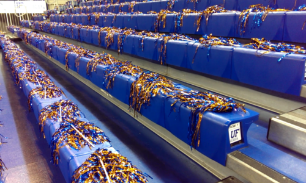

Florida Gators Traditions

The University of Florida has one of the most well-respected and successful athletic programs in the country. Click an icon below to learn more about a gameday tradition at UF, or use the buttons to jump to a section.
Gator Walk
Two hours before every home game, fans line up on either side of the brick walkway on the north end of Ben Hill Griffin Stadium for the Gator Walk. Team buses arrive on University Avenue, where players and coaches exit and begin their trek through a sea of orange-and-blue-clad fans cheering on their team. Along the Gator Walk, the team passes over bricks adorned with the names of boosters, alumni and their families with messages of encouragement for the upcoming game.
Mr. Two Bits
Started by the original Mr. Two Bits, George Edmondson, the Two Bits cheer represents cheering for the Gators no matter how good or bad the team may be playing. Edmundson held the role of Mr. Two Bits for many decades before retiring. Now each game, the university hosts an "Honorary Mr. Two Bits" to lead the cheer while dressed in Edmundson's famous yellow dress shirt and orange-and-blue-striped tie.
Two bits,
Four bits,
Six bits,
A dollar!
All for the Gators
Stand up and holler!
Here Come The Gators

As the team lines up in the tunnel to take the field, the video boards in Ben Hill Griffin Stadium play UF's iconic intro video, featuring live alligator stalking their prey while the "Gator Chomp" music plays, all leading up to the narrator saying "The Swamp: Only Gators get out alive." The team then rushes onto the field as "Heeeeeeeeeerrrrrreeee come the Gators!" can be heard over the speakers while the crowd cheers wildly.
We Are The Boys From Old Florida
At the end of the third quarter, Gator fans lock arms and swing, sway and sing while the band plays "We Are The Boys From Old Florida". The songs' concluding lines of "In all kinds of weather/We'll all stick together" has become a rallying cry for the Florida faithful. To hear the song and see the full lyrics, see the "Songs" section below.
Gator Walk
Two hours before every home game, fans line up on either side of the brick walkway on the north end of Ben Hill Griffin Stadium for the Gator Walk. Team buses arrive on University Avenue, where players and coaches exit and begin their trek through a sea of orange-and-blue-clad fans cheering on their team. Along the Gator Walk, the team passes over bricks adorned with the names of boosters, alumni and their families with messages of encouragement for the upcoming game.
Mr. Two Bits
Started by the original Mr. Two Bits, George Edmondson, the Two Bits cheer represents cheering for the Gators no matter how good or bad the team may be playing. Edmundson held the role of Mr. Two Bits for many decades before retiring. Now each game, the university hosts an "Honorary Mr. Two Bits" to lead the cheer while dressed in Edmundson's famous yellow dress shirt and orange-and-blue-striped tie.
Two bits,
Four bits,
Six bits,
A dollar!
All for the Gators
Stand up and holler!
Here Come The Gators
As the team lines up in the tunnel to take the field, the video boards in Ben Hill Griffin Stadium play UF's iconic intro video, featuring live alligator stalking their prey while the "Gator Chomp" music plays, all leading up to the narrator saying "The Swamp: Only Gators get out alive." The team then rushes onto the field as "Heeeeeeeeeerrrrrreeee come the Gators!" can be heard over the speakers while the crowd cheers wildly.
We Are The Boys From Old Florida
At the end of the third quarter, Gator fans lock arms and swing, sway and sing while the band plays "We Are The Boys From Old Florida". The songs' concluding lines of "In all kinds of weather/We'll all stick together" has become a rallying cry for the Florida faithful. To hear the song and see the full lyrics, see the "Songs" section below.
Gate 3
The "home outside the home" of the Rowdy Reptiles, Gate 3 is the student entrance to the Stephen C. O'Connell Center. Because the earliest ones get the best seats, students have been known to line up and wait outside of Gate 3 for hours and even days with tailgate chairs, blankets and even tents. For the spring 2014 game featuring the #1 ranked Gators against rival Kentucky, more than 400 students camped out overnight in a line that stretched down Stadium Road. Students have used #OccupyGate3 on social media to chronicle their experiences.
Shakers
Don't call it a pom pom. The primary tool of a Rowdy Reptile, a shaker, lay ready for students on seats before the game. Featuring chrome orange and blue strands, shakers can be used to distract opponents and celebrate a great play by the Gators.
For Three
Today started move in day for #UF19. Welcome to campus, remember it only rains 3s in the @OConnellCTR @MBKRowdies pic.twitter.com/YZSdj07StU
— Gator M-Basketball (@GatorsMBK) June 23, 2015To celebrate a made three-point basket, students hold up three fingers in each hand (making the a-ok sign) and bow while the public address announcer exclaims the player's name followed by "FOR THREEEEEEE!" Cheerleaders will then throw out special three-point T-shirts to the crowd at the next timeout.
You Can Call Me Al
At the under-8 timeout of the second half, the band strikes up its special rendition of Paul Simon's "You Can Call Me Al." The song's iconic cadence give students a great beat to jump and sing to. Midway through the song, everyone quiets down, cups their hand around their ear, and listens to the piccolo solo. But why play "You Can Call Me Al?" Florida's mascot is named Albert, of course. To hear the song, check the "Songs" section below.
Gate 3
The "home outside the home" of the Rowdy Reptiles, Gate 3 is the student entrance to the Stephen C. O'Connell Center. Because the earliest ones get the best seats, students have been known to line up and wait outside of Gate 3 for hours and even days with tailgate chairs, blankets and even tents. For the spring 2014 game featuring the #1 ranked Gators against rival Kentucky, more than 400 students camped out overnight in a line that stretched down Stadium Road. Students have used #OccupyGate3 on social media to chronicle their experiences.
Shakers
Don't call it a pom pom. The primary tool of a Rowdy Reptile, a shaker, lay ready for students on seats before the game. Featuring chrome orange and blue strands, shakers can be used to distract opponents and celebrate a great play by the Gators.
For Three
Today started move in day for #UF19. Welcome to campus, remember it only rains 3s in the @OConnellCTR @MBKRowdies pic.twitter.com/YZSdj07StU
— Gator M-Basketball (@GatorsMBK) June 23, 2015To celebrate a made three-point basket, students hold up three fingers in each hand (making the a-ok sign) and bow while the public address announcer exclaims the player's name followed by "FOR THREEEEEEE!" Cheerleaders will then throw out special three-point T-shirts to the crowd at the next timeout.
You Can Call Me Al
At the under-8 timeout of the second half, the band strikes up its special rendition of Paul Simon's "You Can Call Me Al." The song's iconic cadence give students a great beat to jump and sing to. Midway through the song, everyone quiets down, cups their hand around their ear, and listens to the piccolo solo. But why play "You Can Call Me Al?" Florida's mascot is named Albert, of course. To hear the song, check the "Songs" section below.
So give a cheer for the Orange and Blue
Waving Forever!
Forever pride of Old Florida,
May she droop never.
We’ll sing a song for the flag today,
Cheer for the team at play!
On to the goal,
We’ll fight our way for
Flor-i-da!
Florida, our Alma Mater
Thy glorious name we praise
All thy loyal sons and daughters
A joyous song shall raise
Where palm and pine are blowing
Where southern seas are flowing
Shine forth thy noble Gothic walls
Thy lovely vine clad halls
‘Neath the Orange and Blue victorious
our love shall never fail
There’s no other name so glorious
All hail, Florida, hail.
We are the boys from old Florida,
F-L-O-R-I-D-A.
Where the girls are the fairest,
The boys are the squarest
Of any old state down our way.
We are all strong for old Florida
Down where the old Gators play.
In all kinds of weather
We'll all stick together
For F-L-O-R-I-D-A.